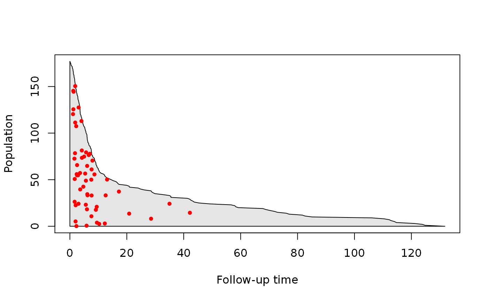
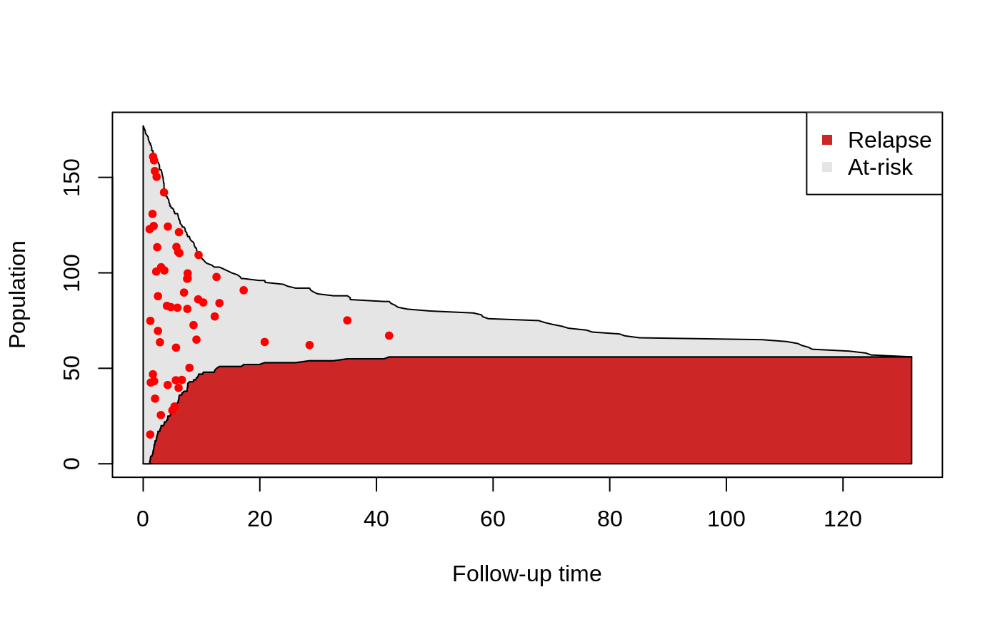
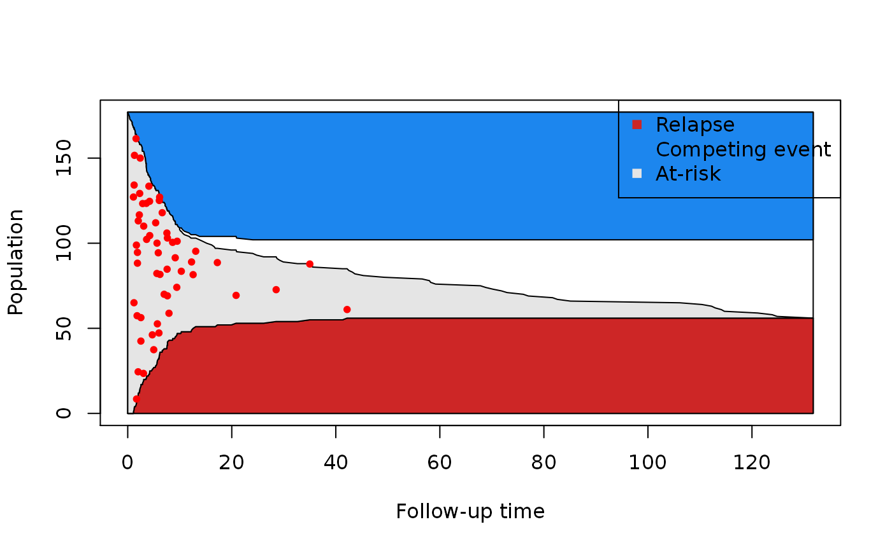
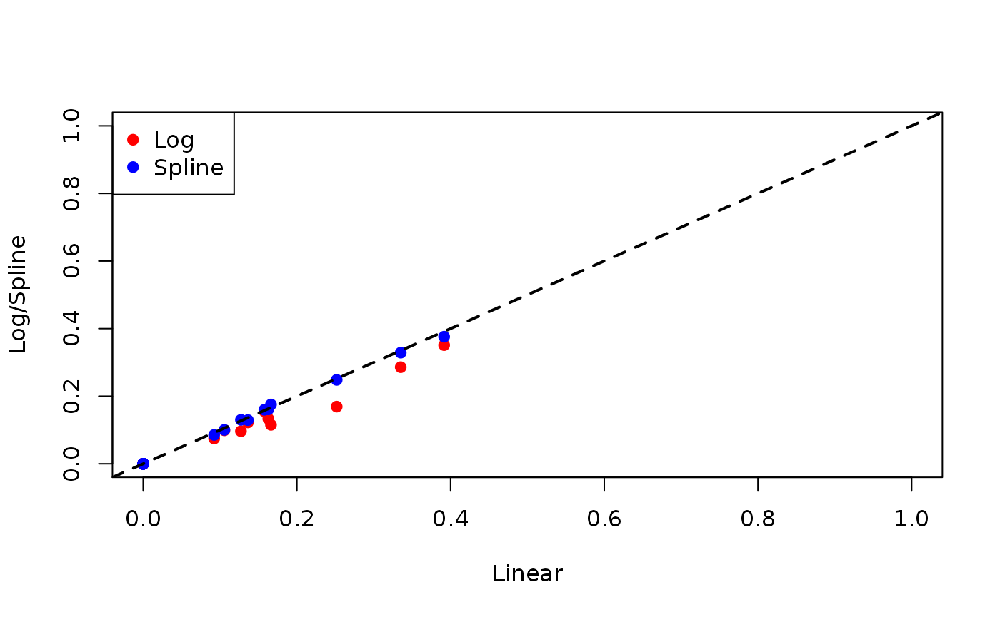

vignettes/competingRisk.Rmd
competingRisk.RmdWe will use the same data that was used in Scrucca et al (2010). The data was downloaded from the main author’s website; it is also available as part of this package.
## See example usage at http://sahirbhatnagar.com/casebase/## Sex D Phase Age Status Source ftime
## 1 M ALL Relapse 48 2 BM+PB 0.67
## 2 F AML CR2 23 1 BM+PB 9.50
## 3 M ALL CR3 7 0 BM+PB 131.77
## 4 F ALL CR2 26 2 BM+PB 24.03
## 5 F ALL CR2 36 2 BM+PB 1.47
## 6 M ALL Relapse 17 2 BM+PB 2.23We will perform a competing risk analysis on data from 177 patients who received a stem cell transplant for acute leukemia. The event of interest in relapse, but other competing causes (e.g. transplant-related death) need to be taken into account. We also want to take into account the effect of several covariates such as Sex, Disease (lymphoblastic or myeloblastic leukemia, abbreviated as ALL and AML, respectively), Phase at transplant (Relapse, CR1, CR2, CR3), Source of stem cells (bone marrow and peripheral blood, coded as BM+PB, or peripheral blood, coded as PB), and Age. Below, we reproduce their Table 1:
| Variable | Description | Statistical summary |
|---|---|---|
| Sex | Sex | M=Male (100) F=Female (77) |
| D | Disease | ALL (73) AML (104) |
| Phase | Phase | CR1 (47) CR2 (45) CR3 (12) Relapse (73) |
| Source | Type of transplant | BM+PB (21) PB (156) |
| Age | Age of patient (years) | 4–62 30.47 (13.04) |
| Ftime | Failure time (months) | 0.13–131.77 20.28 (30.78) |
| Status | Status indicator | 0=censored (46) 1=relapse (56) 2=competing event (75) |
The statistical summary is generated differently for continuous and categorical variables:
For continuous variables, we are given the range, followed by the mean and standard deviation.
For categorical variables, we are given the counts for each category.
Note that failure time can also correspond to censoring.
In order to try and visualize the incidence density of relapse, we can look at a population-time plot: on the X-axis we have time, and on the Y-axis we have the size of the risk set at a particular time point. Failure times associated to the event of interest can then be highlighted on the plot using red dots.
nobs <- nrow(bmtcrr)
ftime <- bmtcrr$ftime
ord <- order(ftime, decreasing = FALSE)
# We split the person-moments in four categories:
# 1) at-risk
# 2) main event
# 3) competing event
# 4) censored
yCoords <- cbind(cumsum(bmtcrr[ord, "Status"] == 2),
cumsum(bmtcrr[ord, "Status"] == 1),
cumsum(bmtcrr[ord, "Status"] == 0))
yCoords <- cbind(yCoords, nobs - rowSums(yCoords))
# Plot only at-risk
plot(0, type = 'n', xlim = c(0, max(ftime)), ylim = c(0, nobs),
xlab = 'Follow-up time', ylab = 'Population')
polygon(c(0, 0, ftime[ord], max(ftime), 0),
c(0, nobs, yCoords[,4], 0, 0), col = "grey90")
cases <- bmtcrr[, "Status"] == 1
# randomly move the cases vertically
moved_cases <- yCoords[cases[ord], 4] * runif(sum(cases))
points((ftime[ord])[cases[ord]], moved_cases, pch = 20,
col = "red", cex = 1)
We can right away draw a few conclusions from this plot: first of all, we get a sense of how quickly the size of the risk set changes over time. We also see that the incidence density is non-constant: most relapses occur before 15 months. Finally, we also see that the risk set keeps shrinking after the last event has occurred; this could be due to either censoring or the competing event.
To get an idea of whether only relapse is responsible for the shrinking of the risk set in the first few months of follow-up, we can also keep track of how many events have occurred at each time point:
# Plot at-risk and events
plot(0, type = 'n', xlim = c(0, max(ftime)), ylim = c(0, nobs),
xlab = 'Follow-up time', ylab = 'Population')
polygon(x = c(0,ftime[ord], max(ftime), 0),
y = c(0, yCoords[,2], 0, 0),
col = "firebrick3")
polygon(x = c(0, ftime[ord], ftime[rev(ord)], 0, 0),
y = c(0, yCoords[,2], rev(yCoords[,2] + yCoords[,4]), nobs, 0),
col = "grey90")
# randomly move the cases vertically
moved_cases <- yCoords[cases[ord], 2] + yCoords[cases[ord], 4] * runif(sum(cases))
points((ftime[ord])[cases[ord]], moved_cases, pch = 20,
col = "red", cex = 1)
legend("topright", legend = c("Relapse", "At-risk"),
col = c("firebrick3", "grey90"),
pch = 15)
Therefore, there is also censoring and loss due to competing events happening in the first few months. However, with this plot, we can’t differentiate between the two contributions. For this reason we can also keep track of the number of competing events at each time point:
plot(0, type = 'n', xlim = c(0, max(ftime)), ylim = c(0, nobs),
xlab = 'Follow-up time', ylab = 'Population')
polygon(x = c(0, max(ftime), max(ftime), 0),
y = c(0, 0, nobs, nobs), col = "white")
# Event of interest
polygon(x = c(0,ftime[ord], max(ftime), 0),
y = c(0, yCoords[,2], 0, 0),
col = "firebrick3")
# Risk set
polygon(x = c(0, ftime[ord], ftime[rev(ord)], 0, 0),
y = c(0, yCoords[,2], rev(yCoords[,2] + yCoords[,4]), nobs, 0),
col = "grey90")
# Competing event
polygon(x = c(0, ftime[ord], max(ftime), 0),
y = c(nobs, nobs - yCoords[,1], nobs, nobs),
col = "dodgerblue2")
# randomly move the cases vertically
moved_cases <- yCoords[cases[ord], 2] + yCoords[cases[ord], 4] * runif(sum(cases))
points((ftime[ord])[cases[ord]], moved_cases, pch = 20,
col = "red", cex = 1)
legend("topright", legend = c("Relapse", "Competing event", "At-risk"),
col = c("firebrick3", "dodgerblue2", "grey90"),
pch = 15)
From this last plot, we can see that there is no censoring during the first 10 months. Moreover, we see that the last competing event occurs around 20 months. Putting all this information together, we have evidence of two types of patients: very sick patients who either relapse or have a competing event early on, and healthier patients who are eventually lost to follow-up.
We now turn to the analysis of this dataset. The population-time plots above give evidence of non-constant hazard; therefore, we will explicitly include time in the model. Note that we also include all other variables as possible confounders. First, we include time as a linear term:
model1 <- fitSmoothHazard(Status ~ ftime + Sex + D + Phase + Source + Age,
data = bmtcrr,
ratio = 100,
time = "ftime")
summary(model1)##
## Call:
## fitSmoothHazard(formula = Status ~ ftime + Sex + D + Phase +
## Source + Age, data = bmtcrr, time = "ftime", ratio = 100)
##
## Coefficients:
## Estimate Std. Error z value Pr(>|z|)
## (Intercept):1 -3.527146 0.685168 -5.148 2.63e-07 ***
## (Intercept):2 -2.648451 0.463012 -5.720 1.06e-08 ***
## ftime:1 -0.070927 0.014929 -4.751 2.02e-06 ***
## ftime:2 -0.105177 0.018349 -5.732 9.93e-09 ***
## SexM:1 -0.289067 0.283217 -1.021 0.307418
## SexM:2 -0.382981 0.236935 -1.616 0.106008
## DAML:1 -0.575749 0.299617 -1.922 0.054654 .
## DAML:2 -0.100149 0.274099 -0.365 0.714833
## PhaseCR2:1 0.186766 0.467042 0.400 0.689237
## PhaseCR2:2 0.286425 0.332270 0.862 0.388673
## PhaseCR3:1 0.586630 0.696521 0.842 0.399660
## PhaseCR3:2 0.310781 0.530986 0.585 0.558353
## PhaseRelapse:1 1.448907 0.391878 3.697 0.000218 ***
## PhaseRelapse:2 0.792938 0.307933 2.575 0.010023 *
## SourcePB:1 0.456442 0.571108 0.799 0.424162
## SourcePB:2 -1.013983 0.355666 -2.851 0.004359 **
## Age:1 -0.005242 0.011917 -0.440 0.660007
## Age:2 0.028597 0.009929 2.880 0.003976 **
## ---
## Signif. codes: 0 '***' 0.001 '**' 0.01 '*' 0.05 '.' 0.1 ' ' 1
##
## Names of linear predictors: log(mu[,2]/mu[,1]), log(mu[,3]/mu[,1])
##
## Residual deviance: 1409.076 on 26444 degrees of freedom
##
## Log-likelihood: -704.5378 on 26444 degrees of freedom
##
## Number of Fisher scoring iterations: 10
##
## Warning: Hauck-Donner effect detected in the following estimate(s):
## '(Intercept):1', '(Intercept):2', 'ftime:1', 'ftime:2'
##
##
## Reference group is level 1 of the responseBecause of the results in Turgeon et al (In Preparation), the standard errors we obtain from the multinomial logit fit are asymptotically correct, and therefore can be used to construct asymptotic confidence intervals.
From this summary, we see that time is indeed significant, as is Phase (only relapse vs. CR1). Interestingly, we see that the type of disease is only significant for the event of interest, whereas the type of transplant and the age of the patient are only significant for the competing event.
Next, we include the logarithm of time in the model (which leads to a Weibull hazard):
model2 <- fitSmoothHazard(Status ~ log(ftime) + Sex + D + Phase + Source + Age,
data = bmtcrr,
ratio = 100,
time = "ftime")
summary(model2)##
## Call:
## fitSmoothHazard(formula = Status ~ log(ftime) + Sex + D + Phase +
## Source + Age, data = bmtcrr, time = "ftime", ratio = 100)
##
## Coefficients:
## Estimate Std. Error z value Pr(>|z|)
## (Intercept):1 -3.976762 0.699660 -5.684 1.32e-08 ***
## (Intercept):2 -3.069308 0.465495 -6.594 4.29e-11 ***
## log(ftime):1 -0.327063 0.069777 -4.687 2.77e-06 ***
## log(ftime):2 -0.403220 0.056786 -7.101 1.24e-12 ***
## SexM:1 -0.413731 0.291497 -1.419 0.15580
## SexM:2 -0.521801 0.240157 -2.173 0.02980 *
## DAML:1 -0.695303 0.306421 -2.269 0.02326 *
## DAML:2 -0.180805 0.287170 -0.630 0.52895
## PhaseCR2:1 0.252923 0.468205 0.540 0.58906
## PhaseCR2:2 0.365004 0.332952 1.096 0.27296
## PhaseCR3:1 0.441402 0.710580 0.621 0.53448
## PhaseCR3:2 0.118189 0.535142 0.221 0.82521
## PhaseRelapse:1 1.447889 0.394226 3.673 0.00024 ***
## PhaseRelapse:2 0.821988 0.309721 2.654 0.00796 **
## SourcePB:1 0.662955 0.598582 1.108 0.26806
## SourcePB:2 -0.920304 0.370576 -2.483 0.01301 *
## Age:1 -0.003153 0.011766 -0.268 0.78873
## Age:2 0.028695 0.009869 2.908 0.00364 **
## ---
## Signif. codes: 0 '***' 0.001 '**' 0.01 '*' 0.05 '.' 0.1 ' ' 1
##
## Names of linear predictors: log(mu[,2]/mu[,1]), log(mu[,3]/mu[,1])
##
## Residual deviance: 1508.083 on 26444 degrees of freedom
##
## Log-likelihood: -754.0415 on 26444 degrees of freedom
##
## Number of Fisher scoring iterations: 8
##
## Warning: Hauck-Donner effect detected in the following estimate(s):
## '(Intercept):1', '(Intercept):2'
##
##
## Reference group is level 1 of the responseAs we can see, the results are similar to the ones with a Gompertz hazard, although Sex is now significant for the competing event.
Finally, using splines, we can be quite flexible about the way the hazard depends on time:
model3 <- fitSmoothHazard(
Status ~ splines::bs(ftime) + Sex + D + Phase + Source + Age,
data = bmtcrr,
ratio = 100,
time = "ftime")
summary(model3)##
## Call:
## fitSmoothHazard(formula = Status ~ splines::bs(ftime) + Sex +
## D + Phase + Source + Age, data = bmtcrr, time = "ftime",
## ratio = 100)
##
## Coefficients:
## Estimate Std. Error z value Pr(>|z|)
## (Intercept):1 -3.714285 0.697993 -5.321 1.03e-07 ***
## (Intercept):2 -3.168984 0.498239 -6.360 2.01e-10 ***
## splines::bs(ftime)1:1 -0.212237 2.256878 -0.094 0.925077
## splines::bs(ftime)1:2 6.902278 3.669973 1.881 0.060007 .
## splines::bs(ftime)2:1 -15.567038 8.068389 NA NA
## splines::bs(ftime)2:2 -76.712396 25.661616 NA NA
## splines::bs(ftime)3:1 -2.723383 10.472710 NA NA
## splines::bs(ftime)3:2 -2.864418 22.204096 NA NA
## SexM:1 -0.283588 0.282655 -1.003 0.315715
## SexM:2 -0.420961 0.236815 -1.778 0.075470 .
## DAML:1 -0.623451 0.301696 -2.066 0.038782 *
## DAML:2 -0.127162 0.275996 -0.461 0.644985
## PhaseCR2:1 0.120167 0.464896 0.258 0.796035
## PhaseCR2:2 0.215708 0.330313 0.653 0.513729
## PhaseCR3:1 0.494530 0.692452 0.714 0.475121
## PhaseCR3:2 0.228801 0.525830 0.435 0.663473
## PhaseRelapse:1 1.451148 0.392110 3.701 0.000215 ***
## PhaseRelapse:2 0.821627 0.310515 2.646 0.008145 **
## SourcePB:1 0.444775 0.571636 0.778 0.436526
## SourcePB:2 -1.127417 0.358987 -3.141 0.001686 **
## Age:1 -0.005600 0.011888 -0.471 0.637619
## Age:2 0.028070 0.009914 2.831 0.004634 **
## ---
## Signif. codes: 0 '***' 0.001 '**' 0.01 '*' 0.05 '.' 0.1 ' ' 1
##
## Names of linear predictors: log(mu[,2]/mu[,1]), log(mu[,3]/mu[,1])
##
## Residual deviance: 1402.024 on 26440 degrees of freedom
##
## Log-likelihood: -701.0122 on 26440 degrees of freedom
##
## Number of Fisher scoring iterations: 16
##
## Warning: Hauck-Donner effect detected in the following estimate(s):
## '(Intercept):1', '(Intercept):2', 'splines::bs(ftime)2:1', 'splines::bs(ftime)2:2', 'splines::bs(ftime)3:1', 'splines::bs(ftime)3:2'
##
##
## Reference group is level 1 of the responseAgain, we see that the results are quite similar for this third model.
We now look at the 2-year risk of relapse:
linearRisk <- absoluteRisk(object = model1, time = 24, newdata = bmtcrr[1:10,])
logRisk <- absoluteRisk(object = model2, time = 24, newdata = bmtcrr[1:10,])
splineRisk <- absoluteRisk(object = model3, time = 24, newdata = bmtcrr[1:10,])
plot(linearRisk, logRisk,
xlab = "Linear", ylab = "Log/Spline", pch = 19,
xlim = c(0,1), ylim = c(0,1), col = 'red')
points(linearRisk, splineRisk,
col = 'blue', pch = 19)
abline(a = 0, b = 1, lty = 2, lwd = 2)
legend("topleft", legend = c("Log", "Spline"),
pch = 19, col = c("red", "blue"))
## R version 4.3.3 (2024-02-29)
## Platform: x86_64-pc-linux-gnu (64-bit)
## Running under: Ubuntu 22.04.4 LTS
##
## Matrix products: default
## BLAS: /usr/lib/x86_64-linux-gnu/openblas-pthread/libblas.so.3
## LAPACK: /usr/lib/x86_64-linux-gnu/openblas-pthread/libopenblasp-r0.3.20.so; LAPACK version 3.10.0
##
## attached base packages:
## [1] stats graphics grDevices utils datasets methods base
##
## other attached packages:
## [1] casebase_0.10.4
##
## loaded via a namespace (and not attached):
## [1] Matrix_1.6-5 gtable_0.3.4 jsonlite_1.8.8 highr_0.10
## [5] dplyr_1.1.4 compiler_4.3.3 tidyselect_1.2.1 VGAM_1.1-10
## [9] jquerylib_0.1.4 splines_4.3.3 systemfonts_1.0.6 scales_1.3.0
## [13] textshaping_0.3.7 yaml_2.3.8 fastmap_1.1.1 lattice_0.22-5
## [17] ggplot2_3.5.0 R6_2.5.1 generics_0.1.3 knitr_1.46
## [21] tibble_3.2.1 desc_1.4.3 munsell_0.5.1 bslib_0.7.0
## [25] pillar_1.9.0 rlang_1.1.3 utf8_1.2.4 cachem_1.0.8
## [29] xfun_0.43 fs_1.6.3 sass_0.4.9 memoise_2.0.1
## [33] cli_3.6.2 mgcv_1.9-1 pkgdown_2.0.7 magrittr_2.0.3
## [37] digest_0.6.35 grid_4.3.3 nlme_3.1-164 lifecycle_1.0.4
## [41] vctrs_0.6.5 evaluate_0.23 glue_1.7.0 data.table_1.15.4
## [45] ragg_1.3.0 survival_3.5-8 stats4_4.3.3 fansi_1.0.6
## [49] colorspace_2.1-0 rmarkdown_2.26 purrr_1.0.2 pkgconfig_2.0.3
## [53] tools_4.3.3 htmltools_0.5.8.1Efron, Bradley. 1977. “The Efficiency of Cox’s Likelihood Function for Censored Data.” Journal of the American Statistical Association 72 (359). Taylor & Francis Group: 557–65.
Hanley, James A, and Olli S Miettinen. 2009. “Fitting Smooth-in-Time Prognostic Risk Functions via Logistic Regression.” The International Journal of Biostatistics 5 (1).
Mantel, Nathan. 1973. “Synthetic Retrospective Studies and Related Topics.” Biometrics. JSTOR, 479–86.
Saarela, Olli. 2015. “A Case-Base Sampling Method for Estimating Recurrent Event Intensities.” Lifetime Data Analysis. Springer, 1–17.
Saarela, Olli, and Elja Arjas. 2015. “Non-Parametric Bayesian Hazard Regression for Chronic Disease Risk Assessment.” Scandinavian Journal of Statistics 42 (2). Wiley Online Library: 609–26.
Scrucca, L, A Santucci, and F Aversa. 2010. “Regression Modeling of Competing Risk Using R: An in Depth Guide for Clinicians.” Bone Marrow Transplantation 45 (9). Nature Publishing Group: 1388–95.
Kalbfleisch, John D., and Ross L. Prentice. The statistical analysis of failure time data. Vol. 360. John Wiley & Sons, 2011.
Cox, D. R. “Regression models and life tables.” Journal of the Royal Statistical Society 34 (1972): 187-220.